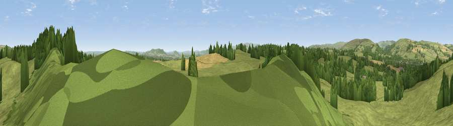

Viewpoint near Kington
#27162 in England · top 74% of its area beats it · near KingtonThe view, rendered

A 360° render of this exact spot computed from the terrain model, tree cover and land cover — summer colours, afternoon light, calibrated against photographs of famous viewpoints. Real trees, hedges and buildings will differ in detail.
The panorama
Grey silhouette: terrain skyline in each direction (720 bearings, Earth curvature and refraction included). Dashed green: skyline with trees (+15 m) and buildings (+8 m) as obstacles. Blue strip: how far the ground is visible on each bearing.
Where the view opens
Wedge length = distance to the farthest visible ground on that bearing (vegetation-aware). Rings at 10, 25 and 50 km.
What fills the view
69% grassland · 21% woodland · 10% cropland ·
Angular shares of the visible panorama (visual magnitude), not map area. Landscape diversity 0.37 (0–1 Shannon).
Key numbers
More beautiful places nearby
The staircase of upgrades: each row has a higher view potential than everything closer. Driving times are estimates from straight-line distance, calibrated against real road routing — check an actual route before setting out.
| Place | Direction | Drive | Score |
|---|---|---|---|
| Viewpoint near Kington | N · 2 km | ~5 min | 46.6 |
| Viewpoint near Lower Welson | SW · 4 km | ~10 min | 67.4 |
| Viewpoint near Kington | NW · 5 km | ~10 min | 75.2 |
| Rushock Hill | NNW · 5 km | ~11 min | 80.2 |
| Merbach Hill | S · 10 km | ~20 min | 81.1 |
| Viewpoint near Craswall | SSW · 19 km | ~33 min | 81.5 |
| Gatley Hill | NE · 20 km | ~34 min | 82.6 |
| Garway Hill | SSE · 32 km | ~50 min | 84.6 |
52.18824, -3.00963 · source: screening · position refined by local search. Computed location — check access rights before visiting.